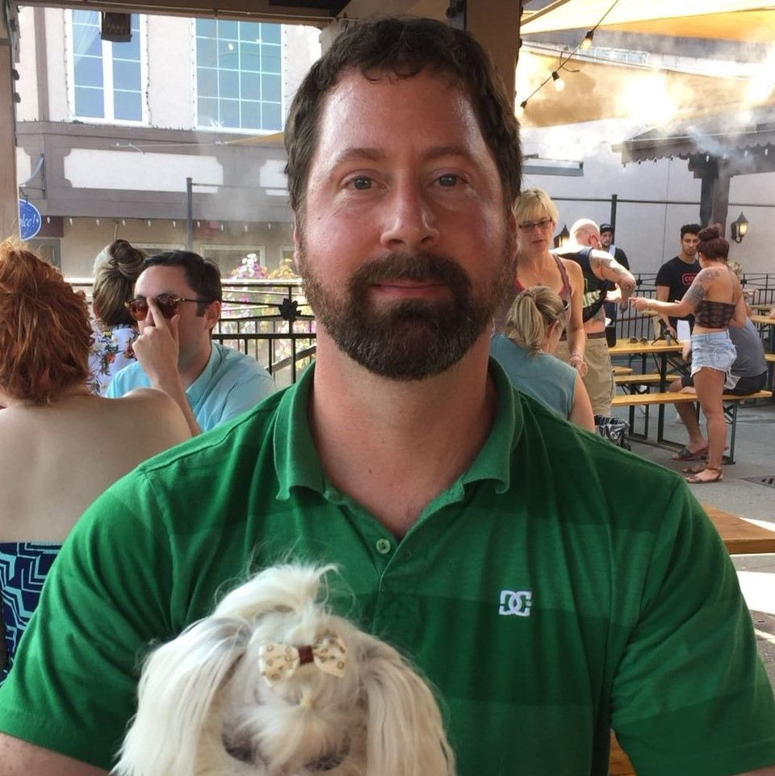
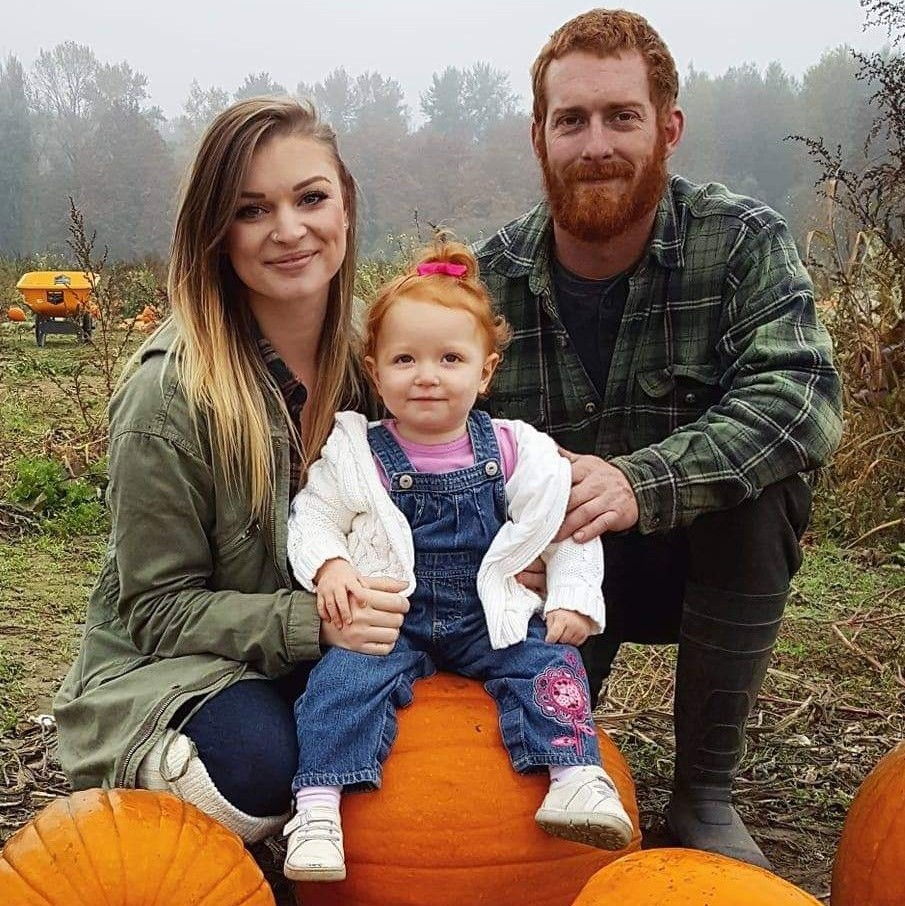
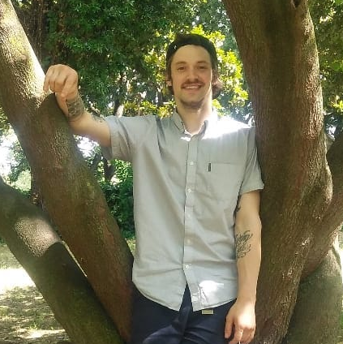

Planner
PlannerAndrew Quamme
I was born and raised in Wisconsin, and after high school I enlisted into the Army. Over the next six years, I spent time in South Carolina, Georgia, Thailand, Kuwait, Iraq, and finally ended up in Washington for my final duty station. I currently live in Tacoma, and I’ve been here long enough that I consider the Pacific Northwest my home. When I’m not in school, I spend as much time outdoors as I can. Name an outdoor activity, and I’ve probably done it at least once! I feel most at home in the mountains, and I try to get others to join me to experience everything nature has to offer.
Jared Pattison
Jared lives in Lynnwood with his wife and their two naughty dogs. He is an experienced Operations and Project Manager in the Agriculture and Oil & Gas industries. His decision to enter the IT industry was influenced by his wife who has extensive experience as a software engineer. Jared enjoys working with technology because he likes problem solving and creating new and useful applications.
Siobhan Niess
I'm a mother to an amazing little girl who helps me push myself to be everything I can be and more. I have lived in Washington all my life and absolutely love the pacific north west. In my spare time I enjoy being outside, whether it's hiking up to water falls or just taking my daughter to the park, anything to just get out of the house. I feel that spending time with your family is very important, we help each other become stronger and make it through the tough moments in life. I would love to visit Ireland or take my family to Hawaii in the future some time soon.
Harris Richardson
I was born in Seattle, Wa where I graduated from Ballard High School. After High School I worked in the Alaskan fishing industry as a crab fisherman and cargo ship crew member. During my time off from my job I traveled to England, Ireland, Spain, Italy and Argentina. While in Argentina I lived in Buenos Aires where I learned to speak Spanish. This photo was taken in Rome.